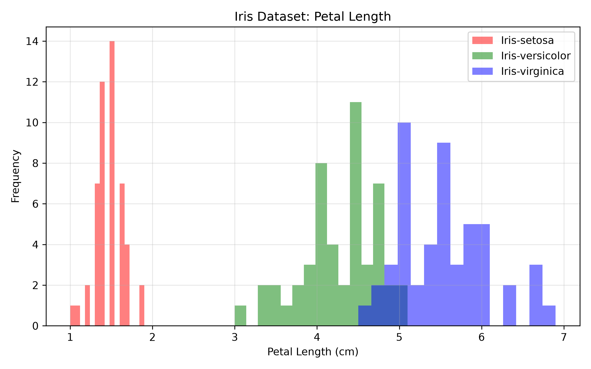
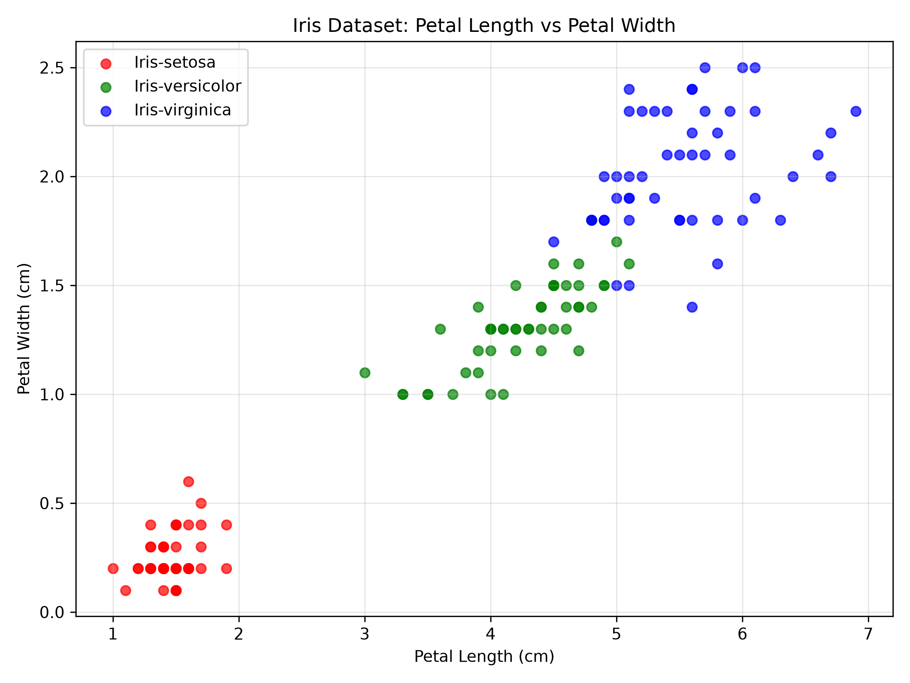
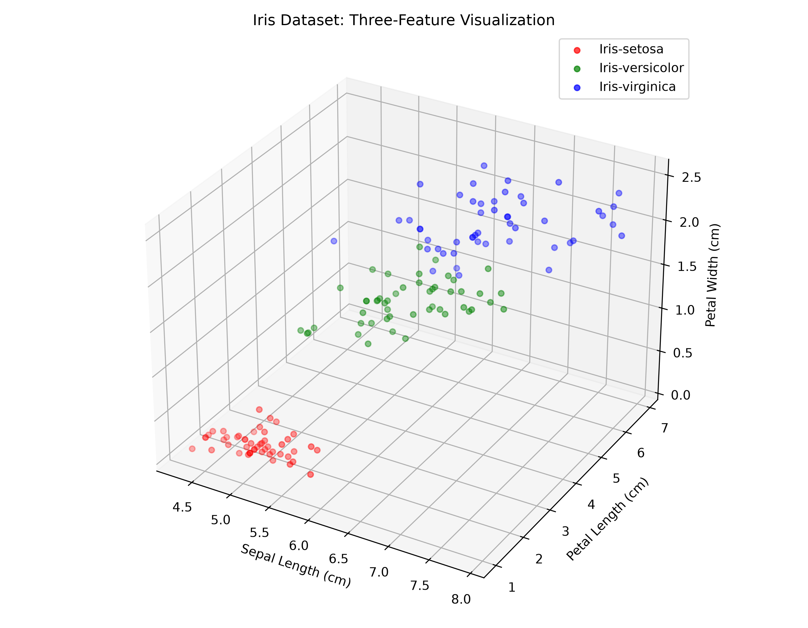
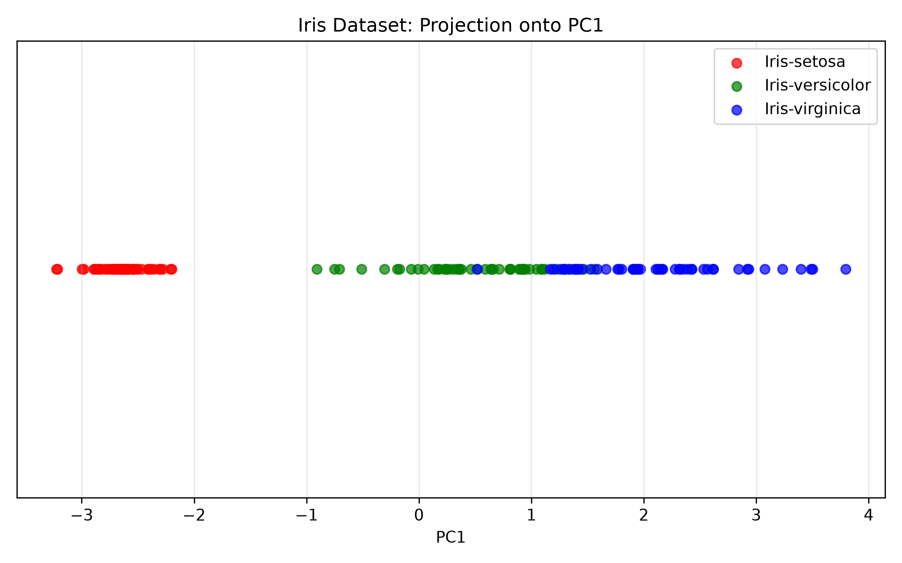
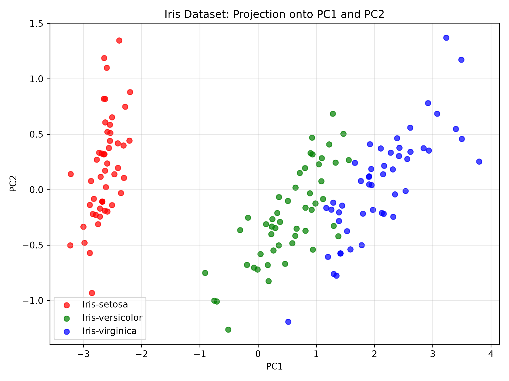
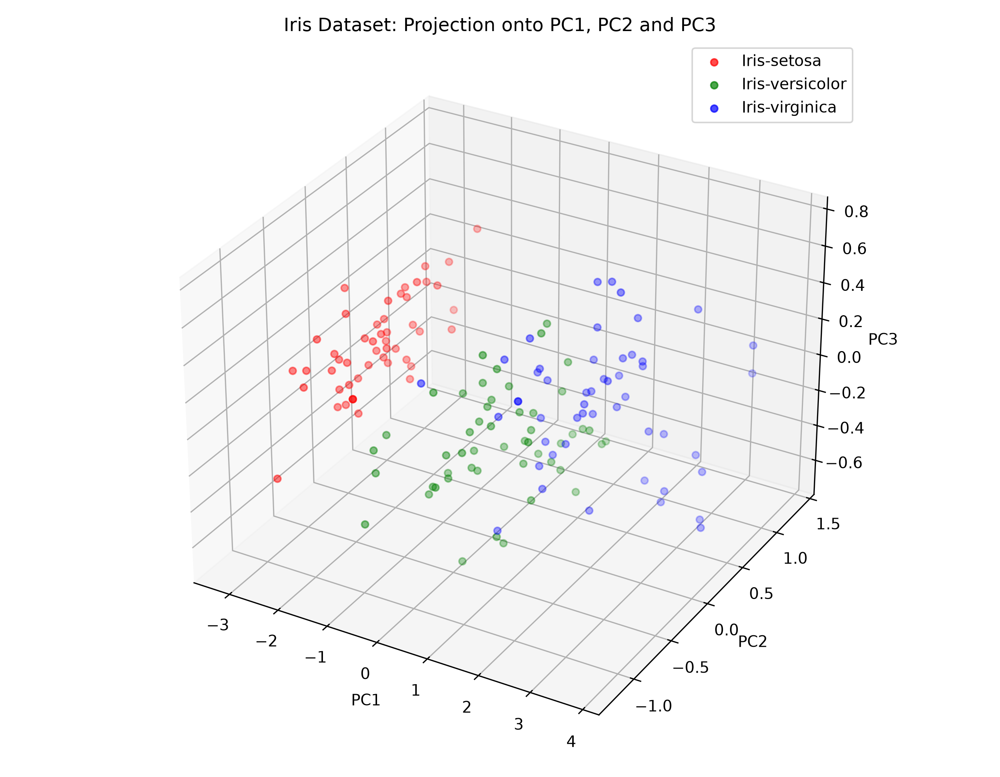
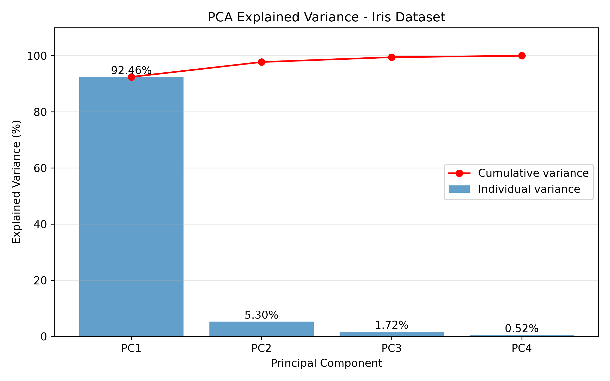
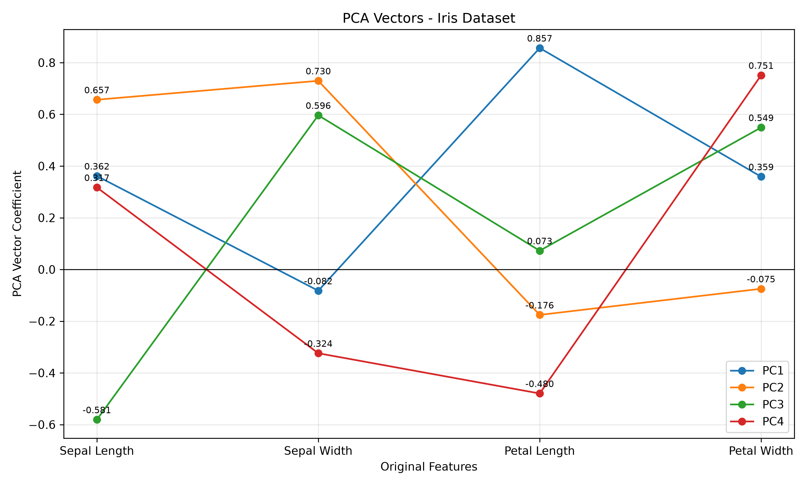
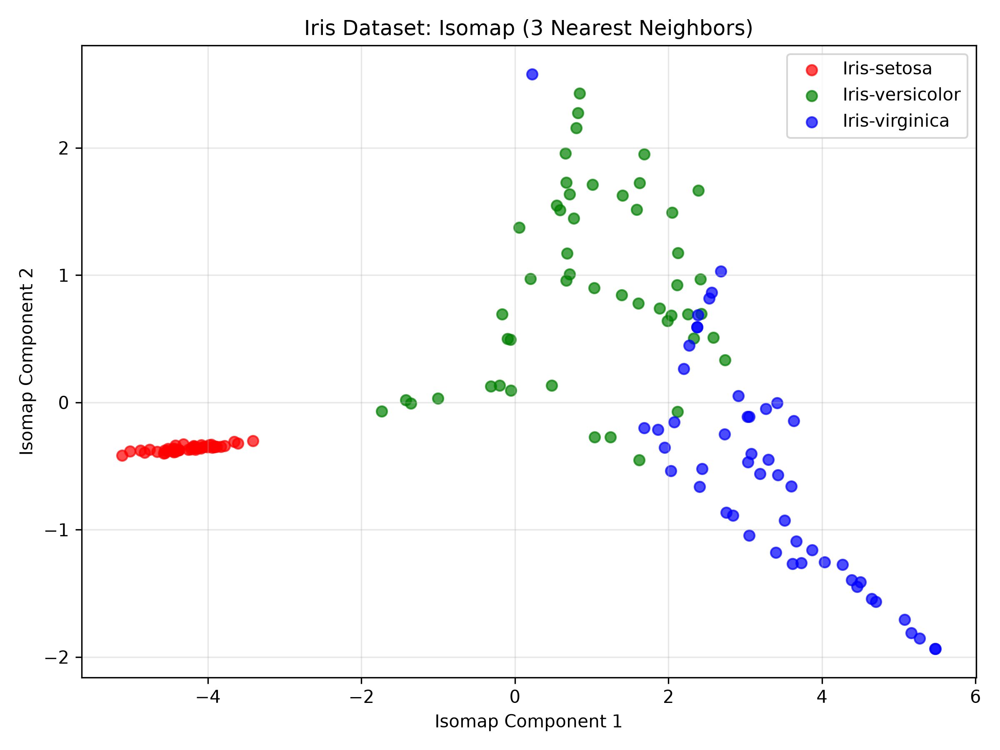

Introduction
The Iris dataset contains 150 flower samples from three species: Iris setosa, Iris versicolor, and Iris virginica. Each sample is described by four measurements: sepal length, sepal width, petal length, and petal width.
The goal of this analysis is to examine how the four-dimensional data can be represented using fewer features while retaining useful information and preserving the structure needed to distinguish the three species.
Part 2 — Feature Selection and Marginalization
The data was visualized using one, two, and three features to examine how different feature combinations reveal the distribution of the three species. These plots show selected dimensions of the original feature space rather than principal components.
One feature
The one-dimensional visualization shows the distribution of a single feature. Petal length is useful because Iris setosa tends to occupy a distinct range, while versicolor and virginica have more overlap.

Figure not found:fig/iris_1d.pngUpdate this filename if your Part 2 plot uses a different name.
Two features
A two-feature scatter plot makes it possible to observe relationships between measurements. Petal length and petal width are particularly informative: setosa is clearly separated, while versicolor and virginica are closer and partially overlap.

Figure not found:fig/iris_2d.pngUpdate this filename if your Part 2 plot uses a different name.
Three features
The three-dimensional plot adds another feature and provides a view of the samples in a three-dimensional feature space. It can reveal structure that is less apparent in a two-dimensional projection, although visual overlap may remain between versicolor and virginica.

Figure not found:fig/iris_3d.pngUpdate this filename if your Part 2 plot uses a different name.
Observations
- Petal measurements provide useful information for distinguishing the species.
- Iris setosa is comparatively easy to distinguish from the other two species.
- Iris versicolor and Iris virginica overlap more, so separating them is more difficult.
- Adding dimensions can reveal additional structure, but does not guarantee perfect class separation.
Part 3 — Principal Component Analysis (PCA)
PCA is a linear dimensionality-reduction method. It finds orthogonal directions (principal components) that successively capture the greatest possible variance in the data. The four original features are transformed into four principal-component coordinates.
Principal component vectors
Each principal component is a direction in the original four-feature space. Its entries are the weights assigned to sepal length, sepal width, petal length, and petal width, respectively.
| Component | Sepal length | Sepal width | Petal length | Petal width |
|---|---|---|---|---|
| PC1 | 0.36158968 | -0.08226889 | 0.85657211 | 0.35884393 |
| PC2 | 0.65653988 | 0.72971237 | -0.17576740 | -0.07470647 |
| PC3 | -0.58099728 | 0.59641809 | 0.07252408 | 0.54906091 |
| PC4 | 0.31725455 | -0.32409435 | -0.47971899 | 0.75112056 |
The sign of an eigenvector can be reversed without changing the principal component direction or the PCA result.
Explained variance
| Principal component | Explained variance | Cumulative variance |
|---|---|---|
| PC1 | 92.46% | 92.46% |
| PC2 | 5.30% | 97.76% |
| PC3 | 1.72% | 99.48% |
| PC4 | 0.52% | 100.00% |
PCA visualizations

Figure not found:fig/iris_pca_1d.png
Figure not found:fig/iris_pca_2d.png'">

Figure not found:fig/iris_pca_3d.png'">

Figure not found:fig/iris_pca_variance.png'">

Figure not found:fig/iris_pca_vectors.png'">
Observations
- PC1 accounts for most of the variation (92.46%).
- PC1 and PC2 together account for 97.76% of the variation.
- The first two components provide a compact representation of the original four features.
- In the two-dimensional plot, setosa is clearly separated, while versicolor and virginica show some overlap.
Part 4 — Data Compression
PCA can compress the dataset by retaining only the first few principal components. The cumulative explained variance indicates how much of the original data's total variance is retained after projection.
| Number of components | Cumulative variance retained | Variance lost |
|---|---|---|
| 1 | 92.46% | 7.54% |
| 2 | 97.76% | 2.24% |
| 3 | 99.48% | 0.52% |
| 4 | 100.00% | 0.00% |
Minimum number of components for 50% variance
Only one principal component is required because PC1 alone explains 92.46% of the total variance, which exceeds the 50% threshold.
Connection to the Frobenius norm
For a centered data matrix \(X_c\), the squared Frobenius norm is the sum of the squared entries:
||X_c||²_F = Σᵢ Σⱼ (X_c)ᵢⱼ²
This represents the total squared variation in the centered dataset. It is equal to the sum of the eigenvalues of the unnormalized scatter matrix \(X_c^T X_c\). If the sample covariance matrix \(X_c^T X_c/(n-1)\) is used instead, the Frobenius norm squared equals \((n-1)\) times the sum of its eigenvalues.
Therefore, the fraction of variance retained by the first \(k\) components is the sum of their eigenvalues divided by the sum of all eigenvalues.
Part 5 — Isomap
Isomap is a nonlinear dimensionality-reduction method. It first constructs a neighbourhood graph using the nearest neighbours of each sample, estimates distances along the graph using shortest paths, and then embeds the data into a lower-dimensional space while attempting to preserve those geodesic distances.
The Iris dataset was embedded into two dimensions using 3 nearest neighbours.

Figure not found:fig/iris_isomap_2d.pngReconstruction error
The Isomap reconstruction error reported by the implementation was:
0.4363607297646883
This error describes distortion in the embedding's representation of the geodesic-distance structure. It is not an explained-variance percentage and should not be directly compared with PCA's 97.76% explained variance.
Comparison with PCA
| Criterion | PCA | Isomap |
|---|---|---|
| Type | Linear | Nonlinear |
| Objective | Maximize retained variance | Preserve approximate geodesic distances |
| Two-dimensional result | Better visual class separation in this analysis | Greater overlap between versicolor and virginica |
| Compression measure | 97.76% variance retained | Reconstruction error: 0.43636 |
Observations and conclusion
In the resulting Isomap visualization, Iris setosa remains comparatively distinct, but Iris versicolor and Iris virginica overlap more than they do in the PCA visualization. Although Isomap can represent nonlinear relationships by preserving geodesic distances, this did not improve class separation for the Iris dataset in this two-dimensional embedding.
Based on the observed plots, PCA is the more suitable representation for this dataset when the goal is compact dimensionality reduction and visual distinction between the three species. This result also illustrates that a nonlinear dimensionality-reduction method does not necessarily produce better class separation than a linear method.
Python Source Code
The complete Python scripts used to generate the results are provided below. Select a file to open or download its source code.